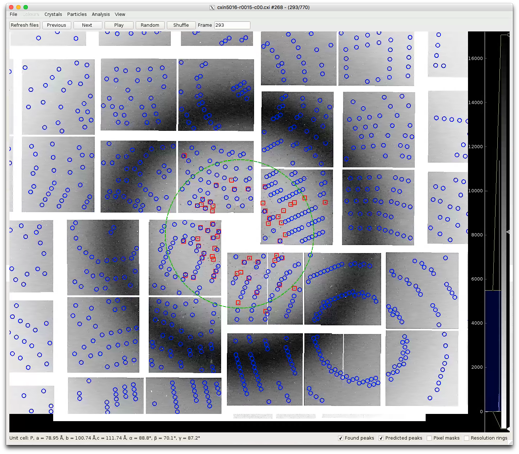
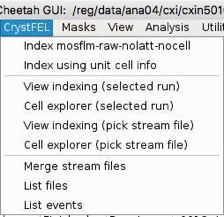

CrystFEL from the GUI

Where do I find the indexing output?
How it works
Basically automated housekeeping to simplify what you do using CrystFEL manually from the command line:
-
-A working directory is created in the cheetah/indexing directory for each run
-
-A list of all events in the selected run is automatically created in this directory. A copy of geometry, processing script, etc is also made in this directory for later reference.
-
-You are asked which indexing script to run. This is simply a CrystFEL wrapper script that looks very much like the indexing scripts most people already use. Do copy and modify them to suit your needs. All files matching the pattern index*.sh in the cheetah/process/ directory are listed in the drop-down menu so follow this file naming pattern.
-
-A geometry file is always asked for. Geometry is critically important to indexing results so we make you think about this step by deliberately asking you to select a geometry file rather than using a default value. Default location for geometry files is in the cheetah/calib/geometry folder.
-
-The selected indexing script is sent to the batch queue for processing on your cluster using a batch queue wrapper script (yes, yet another wrapper wrapping a wrapper - this is to enable you to change the scripts as needed without having to change the python code itself, for example to use the GUI for indexing at home as described below)
-
-Stream files are saved into the cheetah/indexing/streams directory and CrystFEL temporary output into the rXXXX directories.
-
-cheetah-crawler keeps an eye on the indexing directories and updates the tables with progress.
-
-CrystFEL output is viewed using menu items to simplify the viewing of results. These point viewing programs to files in the standard locations and launch command-line processes.
-
-Everything is in a standard location, much like the cheetah output itself, making it easier to find your results later
Look at your data!
Seriously. There is no substitute for looking at the peak finding and indexing results. Check for unreliable regions on the detector, such as shadows. Engage your brain. Garbage in, garbage out.
Hint: Indexing is deliberately performed on a per-run basis. This splits the processing (parallelisation) while keeping data from the same run together. It is not uncommon for certain runs to be best excluded from the dataset, for example due to a moved detector, different shadowing on the detector, jet misbehaviour or changes in unit cell parameters over time. In some cases different batches of sample needed to be separated, in other cases certain runs are best excluded for other experimental reasons.
A run is a logical unit of division - not too large but also not too small. We group data by run since a new run is typically started whenever a change is made to the system, so this is a logical breaking point in analysis.
Automation relies on enforcing some standard structure in the location of data. Standardisation also helps you find your own data once you start processing many experiments at the same time, because it’s always in a familiar place.
Output is saved in the cheetah/indexing directory
A typical directory tree looks like:
> ls indexing/
r0001-daq
r0011-rice/
streams
> ls indexing/r0011-rice/
1vds.pdb
cxin5016_v1.geom
indexamajig.411
r0011-rice-nocell.stream -> ../streams/r0011-rice-nocell.stream (symbolic link to stream file)
bsub.log
files.lst
index_nocell.sh
> ls indexing/streams/
r0011-rice-nocell.stream
- Stream files are saved into the cheetah/indexing/streams directory
- rXXXX is a working directory is created in the cheetah/indexing directory (for geometry, copy of processing script, etc)
-
-Default location for geometry files is in the cheetah/calib/geometry folder.
How to
-
1)Take a look at the template scripts in cheetah/process (check the latest version of /reg/g/cfel/cheetah/template.tar)
Indexing scripts: index*.sh
Batch queue wrapper: queue.sh
-
2)Wait until Cheetah has finished hit finding the run of interest (or accept incomplete processing)
-
3)Run CrystFEL->index mosflm-raw-nolatt-nocell
View output using CrystFEL-> Cell explorer
This will generate the usual histograms. Check that unit cell is what you expect. A bad unit cell or poor indexing rate is very informative and often indicates problems.
-
4)If all looks OK, create a copy of one of the templates and add/change to make your own custom CrystFEL recipe (see below)
-
5)Relaunch indexing using your modified script with unit cell information and wait for it to run
-
6)Check overlay of indexing result with the found peaks and the real image data
CrystFEL->View indexing -
7)cxiview can be launched from the command line:
> cxiview -s ../indexing/r0015-rice/r0035.stream
-
8)Merge stream files from different runs using
CrystFEL->merge stream files
use for indExing at home
Indexing only relies on the presence of Cheetah output and availability of CrystFEL. It does not depend on psana or availability of the raw facility data. It is possible to copy the Cheetah output home and use the GUI to organise indexing of data locally, at home, on your own cluster.
-
-Leave the Cheetah directory structure intact, copy the whole cheetah/ tree (not just the HDF5 output).
-
-Run cheetah-gui and check that you can view data... a sanity check
-
-Modify the batch submission script in queue_*.sh to suit your cluster.
Some mucking around with scripts may be necessary but you should only have to do it once and then share it with all your colleagues. Check terminal output for errors. Scripts work from the command line for debugging.
Example batch queue wrapper:
> cat /reg/g/cfel/cheetah/template/cheetah/process/queue_slac.sh
#!/bin/bash
#
# Parameters:
# $1 = Job tag
# $2 = Working directory for execution
# rest = command to execute
# Submit job to SLAC batch queue (psanaq, etc)
QUEUE='psanaq'
# Parameters passed from Cheetah GUI (use shift to extract final command)
LABEL=$1
WORKINGDIR=$2
shift
shift
COMMAND=$@
# For debugging
#echo "Queue: " $QUEUE
#echo "Workingdir: " $WORKINGDIR
#echo "Label: " $LABEL
#echo "Command: " $COMMAND
# Dependencies that may not be imported by default
source /reg/g/cfel/crystfel/crystfel-dev/setup-sh
# Batch queue commands
FULLCOMMAND="bsub -q $QUEUE -o bsub.log -x -J $LABEL -cwd $WORKINGDIR $COMMAND"
echo $FULLCOMMAND
$FULLCOMMAND
Copy this file or your modified version to queue.sh to make it the default script.


Customise it
Indexing scripts will look familiar to anyone who runs CrystFEL from the command line.
Tag, PDB file and Geometry file are passed from the GUI
All other options are controlled by this script.
Copy and modify. Files in cheetah/process matching index_*.sh are included in the drop down menu.
> less index_pdb.sh
#. /reg/g/cfel/crystfel/crystfel-dev/setup-sh
TAG=$1
PDB=$2
GEOMFILE=$3
echo "Indexing with known unit cell"
echo "Using: " $PDB
echo "Using: " $GEOMFILE
echo ">------------------------------------<"
ln -fs ../streams/$TAG.stream ./$TAG.stream
indexamajig -i files.lst -g $GEOMFILE \
-o ../streams/$TAG.stream \
--indexing=mosflm,xds,dirax,asdf \
--pdb=$PDB \
--int-radius=3,4,5 \
--peaks=cxi --check-hdf5-snr --min-snr=5 \
-j 24
